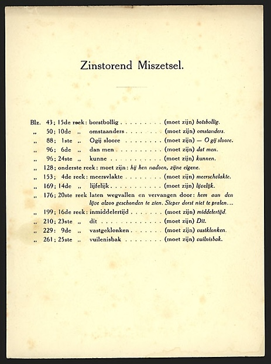
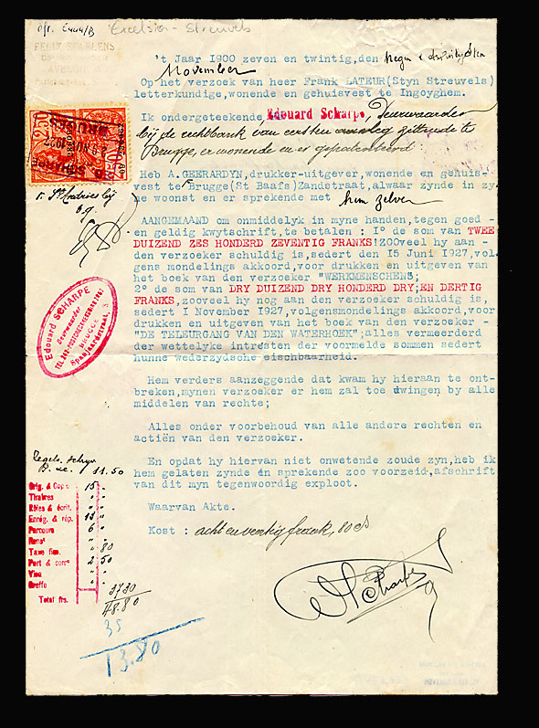

Ontstaansgeschiedenis van De teleurgang van den Waterhoek1
"Streuvels' laatste grote roman" noemt Hedwig Speliers De Teleurgang van den Waterhoek in zijn Streuvels-biografie.2 De roman verscheen in 1927. Streuvels is dan 56 jaar.
Aan het boek liggen reële gebeurtenissen van 20 jaar vroeger ten grondslag: op 9 september 1906 werd tussen de Avelgemse wijk Rugge (= de Waterhoek) en het Oost-Vlaamse Ruien de nieuw gebouwde brug over de Schelde feestelijk geopend; voor het zover kwam, waren een landmeter en zijn assistent door de buurtbewoners vermoord (Speliers, p.492). Ook de Mira-figuur gaat op een reëel personage terug nl. Marie-Virginie Vermeeren, en aan ingenieur Maurice Rondeau uit de roman beantwoordt in werkelijkheid Maurice Mostaert. Zij trouwden in 1905, maar het huwelijk zou vlug spaak lopen (Speliers, p.496).3 Ruim 20 jaar heeft Streuvels er laten overgaan. "Voor me-zelf wist ik wel dat het goed ineensteekt — de motieven door elkaar slingeren tot een geheel — het ding 25 jaar gegroeid zijnde, rijp was geworden" schrijft hij op 27 november 1927 aan Joris Eeckhout.4
De teleurgang is in voorpublicatie verschenen in het Amsterdamse tijdschrift De Gids. H.T.Colenbrander, redactiesecretaris van het tijdschrift, laat op 31 december 1925 Streuvels weten dat De Gids "De Teleurgang van den Waterhoek" met genoegen zal plaatsen "onmiddellijk na het voltooien der publicatie van den loopenden roman van Augusta de Wit"5, zodat Streuvels' werk "in Mei of Juni" van 1926 zou kunnen beginnen verschijnen.
Op 28 april 1926 laat Colenbrander Streuvels weten dat de publicatie van de Wits roman enige vertraging heeft opgelopen, zodat De teleurgang pas vanaf 1 augustus kan worden opgenomen. Voor de augustus- én voor de septemberaflevering heeft Colenbrander Streuvels' kopij reeds in handen; hij informeert ernaar of het derde gedeelte van de roman ongeveer dezelfde omvang als de twee vorige (ca.52 getikte bladzijden) zal hebben, en daarmee in oktober het geheel zal besluiten, ofwel of hij ook de novemberaflevering nog moet ter beschikking houden. Immers, er ligt een roman van Maurice Roelants klaar, die in twee afleveringen zou kunnen (november-december). Streuvels kon evenwel op dat ogenblik geen eenduidig antwoord geven, vermits hij in april 1926 zijn werk nog bijlange niet voltooid had. Hij schrijft op 1 mei een (niet bewaarde) brief aan Colenbrander, die hem op 4 mei antwoordt dat het hem beter lijkt "den Waterhoek voor 1927 te bestemmen", vermits er "omtrent den omvang van het slot van Uw werk nog geen zekerheid te geven is"; de roman van Roelants kan dan eerst verschijnen.6
Uit deze brieven blijkt derhalve dat in april-mei 1926 in feite nog maar twee hoofdstukken van De teleurgang 'persklaar' waren. In die dagen schreef Streuvels ook de novelle Leven en dood in den ast, die verscheen in Groot Nederland (XXIV, 1926, dl.2, p.113-138; p.246-273), gedateerd werd met 'Meimaand 1926', en in hetzelfde jaar 1926 tevens werd opgenomen in Werkmenschen.
Ook uit het overgeleverd bronnenmateriaal blijkt ten overvloede dat Streuvels de eerste twee hoofdstukken van De teleurgang vóór Leven en dood in den ast schreef: het bewaarde handschrift van deze novelle is te vinden op de keerzijde van bladzijden uit het kladhandschrift van het eerste en tweede hoofdstuk van De teleurgang. Dat deze kladbladzijden bovendien lukraak door mekaar werden gebruikt voor Den ast, bewijst dat de tekst van beide hoofdstukken van De teleurgang dan al in een meer definitieve versie waren overgeschreven.7
Nadat Leven en dood in den ast voltooid was, ging het schrijven aan De teleurgang blijkbaar heel vlot, want van januari tot juli 1927 kon het werk in zeven opeenvolgende afleveringen van het tijdschrift De Gids verschijnen.8 In hetzelfde jaar wordt het in boekvorm gepubliceerd in Amsterdam bij Veen en in Brugge bij Excelsior. Dat een en ander hierbij niet van een leien dakje liep, vernemen we uit de bewaarde brieven van A.P. Abramsz (uitgeverij Veen) en van A. Geerardijn (uitgeverij Excelsior) aan Streuvels. Blijkens deze brieven heeft Streuvels een grote kater overgehouden aan de (relatief korte) samenwerking met uitgeverij Excelsior.
Het was nochtans goed begonnen.
In 1926 had Veen Werkmenschen uitgegeven en begin 1927 bezorgde uitgeverij Excelsior een eerste druk voor Vlaanderen: zelfde tekst, zelfde letter, maar met verschillend zetsel.9
Op 25 januari 1927 schrijft A.P. Abramsz aan Streuvels dat de Vlaamse uitgave van Werkmenschen er goed uitziet; op Streuvels' suggestie uit een vorige brief "in het vervolg met Gerardyn iets te doen", antwoordt hij dat de Brugse uitgever De teleurgang zou kunnen drukken en uitgeven; "voor mij" (d.i. voor uitgeverij Veen) kan dan "de editie voor Nederland op papier dat ik altijd gebruik worden meegedrukt. Dat is éénmaal zetten en drukken en werkt economischer".10 Anderhalve maand later — 12 maart — schrijft Abramsz nogmaals: "Wij moesten met "teleurgang" het dubbele vermijden. Gerardijn wacht trouwens op Uw beschikking hieromtrent. Hij kocht 1000 "Oogst" van mij".11
Op 23 april 1927 bezorgt Abramsz de eerste vier afleveringen van De Gids aan Streuvels "ten einde Uw roman De Teleurgang van den Waterhoek voor de afzonderlijke uitgaaf te bewerken". En op 8 juni somt hij een drietal mogelijkheden op i.v.m. de boekuitgave: ofwel heeft de firma Veen het alleenrecht van de uitgave van b.v. 2000 exemplaren; ofwel wordt in België gedrukt, b.v. bij Geerardijn, koopt Veen 1500 exemplaren en betaalt een halve gulden honorarium per exemplaar; ofwel wordt bij De Coene te Kortrijk gedrukt ("op Uw pers in Kortrijk" zoals Abramsz zegt12), en koopt Veen 1500 exemplaren in losse vellen rechtstreeks van Streuvels (plus 750 gulden honorarium). Streuvels heeft voor de tweede mogelijkheid geopteerd. Uit Geerardijns schrijven van 2 juli blijkt inderdaad dat de Brugse uitgever de opdracht gekregen heeft: hij meldt dat hij "het papier voor de Vl. uitgave" al heeft besteld.13
Ofschoon Geerardijn drukte, sprak de firma Veen een hartig woord mee in de uitgave van De teleurgang. Zo schrijft Abramsz op 3 augustus 1927 aan Streuvels: "Daar Geerardijn geen stempel band [sic] laat maken, verzoek ik U om toezending van de teekening voor plat en rug, opdat ik dezen hier kan laten vervaardigen" — wat erop wijst dat Abramsz zijn eigen band voor de uitgave wenste te maken.
Op 12 augustus kan Abramsz melden dat hij "van Geerardijn proeven van de vellen 1/3" heeft gekregen, "dus is hij met boek [sic] eindelijk bezig"; wel staat de Franse titel op de plaats van de gewone titel en vice versa, maar: "Waarschijnlijk hebt U dit reeds in de proef gewijzigd?" Uit latere brieven (9 september en 3 oktober) blijkt overigens dat Abramsz verder proeven ontving, wat er nogmaals op wijst dat de firma Veen duidelijk bij de uitgave werd betrokken.
Op 31 augustus laat Geerardijn Streuvels weten dat hij voor de zes luxe-exemplaren op "Ossekop"-papier een nieuwe "inleg" moet maken (dus de bestaande zetselpagina's moet herschikken i.v.m. het vouwschema en het formaat van het boek en dit omwille van het afwijkend formaat van de vellen). Dat belooft een dure aangelegenheid te worden: "Ik heb berekend dat ieder boek van de 6 ex. op 250 fr. zoude komen. als U daarvan 3 ex. gratis krijgt (...) dan zouden die ex. 1000 fr moeten verkocht worden". Dat neemt niet weg dat er blijkens het colofon van de eerste druk, naast andere luxe-exemplaren, wel degelijk zes exemplaren op "Van Gelder 'Ossekop' genummerd van A tot F" gedrukt werden.
Op 3 oktober moet Abramsz Streuvels melden dat het papier voor de Hollandse oplage nog niet geleverd is, wat Geerardijn tot enig talmen aanzet: "Ik heb niet verder doorgewerkt aan De Teleurgang omdat ik het papier van Veen nog niet heb". Terloops: in deze brief van 13 oktober deelt Geerardijn Streuvels mee dat Werkmenschen "buitengewoon slecht" loopt: "Misschien zal het beteren als De Teleurgang verschijnt".
Een paar dagen later — 17 oktober — laat Abramsz aan Streuvels weten dat de vertraging in de papierlevering voor Geerardijn geen reden mag zijn om niet verder te werken: de drukker kan het geheel zetten en persklaar maken zodat bij de levering van het papier het boek in zijn geheel ineens kan worden gedrukt.
Een en ander schijnt dan toch nog vrij vlot verlopen te zijn, want een maand later — op 22 november — kan Abramsz schrijven dat "de zending van Geerardijn" "gisteren" bij zijn "binders" is aangekomen. Wat bewijst dat de Hollandse uitgave op last van de firma Veen werd ingebonden — de Vlaamse niet, want in dezelfde brief vraagt Abramsz zich af hoe de Belgische uitgave er uitziet. Verder meldt Abramsz Streuvels dat hij tijdig de "errata" heeft ontvangen, ze zal laten drukken en in ieder exemplaar toevoegen. En de "errata" waren blijkbaar nodig: "Wat een tegenspoed hebt ook U met dit boek beleefd! Op een Hollandsche drukkerij is het wegvallen van een reek vrijwel een onmogelijkheid!".
Meer uitleg hieromtrent vinden we in een brief die Streuvels vijf dagen later, op 27 november, aan Joris Eeckhout schrijft. Hij spreekt er zijn genoegen over uit dat De teleurgang Eeckhout is meegevallen,14 en heft tevens een jammerklacht aan over Geerardijn: "Jammer dat ik met dat boek bij zulk een uitgever ben terecht gekomen: al de fouten, en die formidabele kemel op blz.176 — waar twee keer dezelfde regel voorkomt en de echte wegviel — zijn alle door den linotypist gemaakt na de revisie!!". En wat verder: "Het boek is dan nog, zonder mijne voorkennis, verschenen, dus ook zonder eene errata-lijst!". De combinatie van de gegevens uit beide brieven (22 november van Abramsz en 27 november van Streuvels) laat ons concluderen dat de Vlaamse uitgave vóór de Nederlandse is verschenen.

De oplage van de eerste druk bedroeg 1500 exemplaren voor Veen, 2000 voor Geerardijn, plus 50 luxe-exemplaren op Hollands van Gelder-papier, waarvan zes op "Ossekop".15
Streuvels' brief van 27 november 1927 aan Eeckhout reveleert nog wat anders. Streuvels schrijft over Geerardijn: "en voor den zakelijken kant dan nog, zal ik hem moeten voor 't gerecht brengen, geloof ik". Wat betekent dit?
Er zijn klaarblijkelijk moeilijkheden geweest met de betalingen. We geven een bloemlezing uit de bewaarde brieven van Geerardijn aan Streuvels: 15 december 1927: "Wat betreft dat ik niet seffens kon betalen het is toch geen misdaad meen ik momenteel geld tekort te hebben, (...)"; 8 maart 1928: "Moest ik geld hebben U zoudt het seffens krijgen, en ik meende het ook reeds te hebben kunnen zenden"; 12 maart: "Ik heb Uwen postwissel niet kunnen betalen. Ik zal echter tegen het einde der maand een som geld hebben welke vervalt. Ik zou dan tegen 5 <Maart>>April het bedrag storten"; en op 13 april: "In antwoord op Uw schrijven van 10-4-28. Ik kon zooals ik beloofde het geld niet zenden, zelfs nog heden kan ik het niet zenden, wel hoop ik het morgen per postcheck te zenden of althans een gedeelte, de rest vast Dinsdag of Woensdag. Wilt U het nog eens doen per deurwaarder, ik kan er niets aandoen".

De laatste brief van Geerardijn die in de correspondentie bewaard bleef, dateert van 4 augustus 1928 en luidt, kort en sec: "Geacht [sic] Stijn Streuvels,/ Ik heb de eer Ued. te laten weten dat U tegen 20 dezer zult betaald zijn, moest het eerder moeten zijn, wil het mij a.u.b. laten weten,/ Hoogachtend/ (A.Geerardijn)".
De gevolgen van een en ander i.v.m. de samenwerking Veen-Streuvels-Geerardijn laten zich raden. Reeds op 6 december 1927 meldt Abramsz aan Streuvels dat hij niets meer met Geerardijn wil te doen hebben. Ook Streuvels moet zich in dezelfde zin hebben uitgesproken, want op 22 december schrijft Abramsz hem: "Dat U met Geerardijn breekt, begrijp ik volkomen".
Waren er derhalve met de Brugse uitgever nogal wat technische en financiële problemen rond de eerste uitgave in boekvorm van De teleurgang, ook met de receptie in Vlaanderen scheen het niet te vlotten. We geven hier slechts een paar reacties weer.17
Zoals gezegd meldde Geerardijn op 13 oktober 1927 dat de verkoop van Werkmenschen "buitengewoon slecht" liep. Twee maanden later, op 15 december, schrijft hij aan Streuvels: "Ook de Teleurgang zal niet verkoopen, het boek is veel te brutaal verschillenden willen het niet recenseeren., zoodat ik dus met Uw twee eerste uitgaven een groot strop heb". Op 8 maart 1928 klaagt Geerardijn nogmaals over de slechte verkoop van Streuvels' boeken, en in een aparte noot zegt hij dat in De Standaard "eene waarschuwing" verschenen is "dat De Teleurgang niet in de Kath. bibliotheken mag komen.!". En mismoedig voegt hij eraan toe: "Wie zal er hem dan wel koopen".
De Standaard van 7 maart 1928 verwijst inderdaad naar de beoordeling over De teleurgang in het gezaghebbende Boekengids, waarin priester-professor en voorzitter van het Davidsfonds Arthur Boon wel wijst op de kwaliteiten van het werk, maar het toch nodig oordeelt een zwaar voorbehoud uit te spreken en het uit de katholieke bibliotheken wenst geweerd te zien. De teleurgang is, aldus Boon, "een sterk en machtig werk, van het beste dat Streuvels ooit heeft geschreven", doch het is spijtig "dat we op zedelijk gebied een streng voorbehoud moeten maken". Er is het feit dat de beschreven "primitieve menschen" helemaal los van en buiten de godsdienst staan, dat er na moord en doodslag zelfs geen berouw bij de daders opkomt, en er is natuurlijk "de beschrijving van Mira en van het ontwaken van het liefdeleven in Maurice"! Daar komen bladzijden voor "die voor de lezers van onze bibliotheken gevaarlijk zijn". Boon besluit dan ook: "Daarom blijve dit werk weg uit katholieke boekerijen: 't is anders spijtig om 't vele schoone dat zoo te leur gaat".18 Des te opvallender is het dat een andere priester, de literair-criticus Joris Eeckhout, geen enkele reserve tegen De teleurgang heeft, het boek in een brief aan Streuvels van 27 november 1927 "een prachtig [sic] roman" noemt, "stevig gebouwd en diep-uitgewerkt", en misschien Streuvels' "schoonste en rijpste werk",19 een beoordeling die hij zonder schroom herhaalt in een recensie in De Standaard van 5 december.20
Tot dusver hebben we de ontstaansgeschiedenis van De teleurgang, en met name van de eerste uitgave in boekvorm, bekeken vanuit overgeleverde briefwisseling. Ook vanuit de overgeleverde primaire documenten — manuscript(en), typoscript, drukproeven, de verschillende drukken — kunnen we gegevens bijeenzamelen over ontstaan en ontwikkeling van de tekst en over de werkwijze van de auteur.
Het overgeleverde manuscript met de volledige tekst van De teleurgang vertoont het beeld van het gewone Streuvelshandschrift: er zijn schrappingen, er zijn toevoegingen — soms in de vorm van een hele alinea —, maar in feite valt het volume van een en ander nogal mee. Voor de eerste hoofdstukken weten we met zekerheid dat er een eerder (klad)handschrift is geweest (cfr.supra). Op het typoscript voor de uitgave in De Gids is hier en daar een woord veranderd of werd al eens een zin herschreven of toegevoegd.
De afleveringen uit De Gids daarentegen, die Abramsz zoals gezegd aan Streuvels bezorgde ter voorbereiding van de uitgave in boekvorm, heeft de auteur met het oog op die uitgave wel vrij grondig bewerkt. Uit de talrijke voorbeelden kunnen we er hier slechts enkele citeren.
Zo is er b.v. de passage waarin Maurice zich het moment herinnert toen hij voor 't eerst bij Mira thuis binnenkwam. De korte opsomming van "tafel, stoelen, 't gelaat van de hangklok, het smeulend vuur in den haard, met den sterken reuk van houtsrook" in De Gids (nr.6, p.300) gaat in de boekuitgave over in een uitvoerige en pregnante sfeerschepping van de woonkamer:
"den dompigen reuk van roet en vunzende lemen in den smeulenden haard; den tik van den slinger en 't uitdrukkelijk gelaat der hangklok, met 't prazelen van het onwetend trientje in zijn muit; de armtierige bemeubeling — tafel en kreupele stoelen; de heiligenbeelden tusschen twee getaande bloemtuilen met wassen druivenbeiers onder hun glazen stolp; prenten, portretten van afwezige of gestorven huisgenooten in papieren lijstjes tegen den gekalkwitten wand boven de schapraai — onder de lage, zwartgerookte zoldering... (...). De indruk van dat ééne moment, met die atmosfeer van rust en stilte, zou hem voor altijd bijblijven als de samenvatting der poëzie van het landelijk leven. Alles kwam hem even kostelijk voor en geheimzinnig, deel uitmakend van haar wezen" (p.210).
Zo is er b.v. een korte passage die Streuvels pas in het boek inlast over het moment direct nadat Maurice Mira op zijn logement in het hotel ontvangen heeft; het is het typische afscheidnemen van verliefden:
"Veel meer dan het feit zelf en de gevolgen er van, stond het hem voor hoe ze bij 't afscheid, van terzijde nog eens omgekeken had, liefelijk geoogeld, eenige stappen gedaan en weer omgekeken, 't hoofd over den schouder gebogen, 't geen de sierlijkheid van haren slanken hals en de gestrektheid harer gestalte deed uitkomen. Toen had hij haar nagekeken en de beweging in het gaan bewonderd" (p.237).
Opvallend zijn de toevoegingen in de boekuitgave die de toenemende twijfel van Maurice over zijn relatie met Mira moeten suggereren.
Wanneer Maurice Mira in gezelschap van ongure kerels aantreft, waarmee ze vrijpostig omgaat, komt hij tot het besef hoezeer hij zijn persoonlijkheid kwijt is geraakt en hoezeer hij "van de voorgetrokken baan" is afgedwaald, zoals het in de Gids-versie staat (nr.7, p.30). In de boekversie hoort hij duidelijk iemand roepen: "Maurice, vous avez quitté votre chemin!"; het is de stem van zijn geweten, "de stem van dengene die hij zelf eens geweest was, tegen den mensch van nu" (p.259). Uit dezelfde sfeer is de toevoeging een paar bladzijden verder: "de onrust van zijn geweten trachtte hij met schijnredenen goed te praten" (p.264).
Op zijn huwelijksdag zelf is Maurice ten prooi aan de grootste twijfels en komt hij tot het inzicht dat hij zich heeft laten misleiden. Wanneer Maurice constateert dat hij net zo goed op een ander meisje (met wie hij gedanst heeft) verliefd had kunnen worden, weidt Streuvels in de boekversie nog even uit:
"De gedachte aan Mira rukte hem weer in de werkelijkheid; hij kreeg een verzinnigen blik over zijn toestand: het scheen wel alsof hij, in zijn jacht naar genot, gelijk een blindeman, op goed geluk in den tas had gegrepen, — de begeerte op die ééne gezet, zonder nog oogen te hebben voor andere schoonheid... (...). In de overtuiging dat hij halsstarrig, tegen wet en wil van een ieder, uit louter eigenzin, zijn kop doorvoerde, bleek het nu dat hij, als een slaapwandelaar, willig en gedwee, de voorgetrokken lijn had gevolgd hem door een vreemde macht voorbeschikt. Te morgen nog maar werd de band toegehaald, en nu reeds schouwde hij met ontsteltenis op 't verder verloop van zijn leven" (p.286).
Dat Mira reeds in haar eerste huwelijksdagen ander mannelijk gezelschap opzoekt, wordt overigens op de drukproef van de boekeditie nog verder geëxpliciteerd. De ontnuchtering volgt weldra bij Maurice:
"Met een grijnslach keek hij nu op zijn dubbelganger; — hij die zoo zeker en vast zijn levensloop had willen volgen langs de strakke lijn (...), zag zich nu verdwaald, op een doolweg zonder uitkomst versukkeld, door 't ontmoeten van dat landsche meissejonk verneukt, — ontnuchterd, beschaamd voor zich zelf en zijne naastbestaanden, tegenover 't werkelijke zijner onherstelbare dwaasheid" (p.288-289).
Maar Maurice kan niet loskomen van Mira: "In zijn geweten brandde de schaamtepijn, en terzelfder tijde stookte de geile begeerte hem aan met onweerstaanbaar geweld" (p.289).
Wanneer hij met de trein de Waterhoek verlaat om zijn moeder te gaan vinden, realiseert Maurice zich hoe "de 'andere' — zijn dubbelganger — hem bezeten, zijn ware wezen teruggedrongen" had. Streuvels voegt hier voor de boekversie een passage toe waarin Maurice reflecteert over zijn misstap (p.291-292), een passage die op de drukproef nogmaals gedeeltelijk werd herschreven.
Ook de afreizende Mira (op het eind van het verhaal) wordt in de boekversie veel beter getypeerd dan in De Gids. De kleurloze zinsnede "Mira zou nu haar nieuw leven beginnen, waarvan zij altijd gedroomd had en zich geroepen voelde" uit De Gids wordt in het boek:
"Hare wezenstrekken bleven onberoerd, den blik op 't raam gericht, zonder dat zij iets opmerkte van de dingen die er voorbijschoven. Zij volgde de arabesken van haren droom, waarin haar eigen beeld, — spiegelend op het glasraam — haar uit de schemerverte van het landschap, met twee diepe oogen aankeek;... zij luisterde naar het zoemende lied dat als een lokroep door de lucht ruischte, en waarin zij den geur van het stadsfestijn opsnoof. Alleen en vrij, ging zij er een nieuwe wereld ontdekken, een ander leven beginnen" (p.296-297).
Uit deze enkele voorbeelden is hopelijk duidelijk geworden dat Streuvels in de loop van 1927 zijn Teleurgang stevig bewerkt heeft met het oog op de uitgave in boekvorm. Motieven die reeds aanwezig zijn in de tijdschriftversie werden verder geëxpliciteerd in de boekuitgave. De gewetensstrijd van Maurice is daar een sprekend voorbeeld van.
Maar dé grote wijzigingen, in de vorm van schrappingen, zijn er gekomen in de "tweede herziene druk", die in 1939 verscheen bij Veen en bij de Standaard-Boekhandel.
In 1934 had uitgeverij Excelsior opgehouden te bestaan.21 Op 27 juni 1935 moet Streuvels in een (niet bewaarde) brief aan de firma Veen bescheid gevraagd hebben over de fondsartikelen die Geerardijn in handen had. Staller van de firma Veen laat in "afwezigheid van den Heer Abramsz" op 5 juli 1935 weten dat Veen "zelf nog grooten voorraad" van De teleurgang heeft, en hoopt een koper in België te vinden.
Uit een brief van 22 mei 1937 van adjunct-directeur Van der Velde van de firma Veen blijkt dat de verkoop in Vlaanderen in handen was van de Brugse boekhandel De Meester. Op 14 juli 1937 laat Van der Velde Streuvels weten "dat de N.V.Standaard-Boekhandel bereid is de verkoop van dit boek ter hand te nemen; heden werden hem 350 ex. toegezonden, die hij naar ik meen tegen 15 Franks verkoop ingenaaid in den handel zal brengen".
Een jaar later, op 2 juni 1938, heeft de inmiddels directeur geworden Van der Velde het over een "goedkoope uitgaaf" van De teleurgang, een "nieuwe druk": "Daar dit boek eventueel in België zal worden gedrukt, kunt U zich voor eventueele wijzigingen het best tot den Heer de Meyer wenden, (...)". (Maurits De Meyer was directeur van de Standaard-Boekhandel).
Op 2 december 1938 schrijft Van der Velde aan Streuvels: "In antwoord op Uw brief van 1 December kan ik U mededeelen, dat wij accoord zijn gegaan met de voorstellen van de Standaard Boekhandel inzake herdruk 'Teleurgang van den Waterhoek" (...)".
Het was allesbehalve een herdruk die in 1939 bij Veen in Amsterdam en bij de Standaard-Boekhandel in Antwerpen verscheen als "tweede herziene druk" van De teleurgang. Streuvels heeft inderdaad duchtig in zijn werk gesnoeid. Alleen maar om het wat korter, en dus goedkoper te maken? Of wou hij de al te pikante, "erotische" passages weren teneinde zijn werk toch ook voor katholieke middens, b.v. voor katholieke bibliotheken aanvaardbaar te maken?
We bekijken een paar van de (talloze) geschrapte passages.
In het begin van het derde hoofdstuk introduceert Streuvels de figuur van Maurice, de ingenieur van de te bouwen brug. Waar de auteur in de eerste boekuitgave niet minder dan zestien bladzijden (1927, p.111-126) besteedt aan de portrettering van Maurice en van het milieu waarin hij zijn beroepsactiviteit zal gaan uitoefenen, heeft hij dit in de tweede uitgave gereduceerd tot nauwelijks één, vrij kleurloze bladzijde. Er stonden op de weggevallen pagina's nochtans een aantal voor de goede gang van het verhaal niet onbelangrijke dingen.
Vooreerst is er de beschrijving van het station waar Maurice de trein neemt, en zijn er zijn beschouwingen tijdens de treinreis. Zo blijkt Maurice niet te blaken van zelfvertrouwen en vraagt hij zich af of hij zal opgewassen zijn tegen zijn taak als ingenieur-opzichter van de werken. Verder overweegt hij hoe zijn moeder, vroeg weduwe geworden, zich allerlei opofferingen heeft moeten getroosten om hem te laten studeren, en hoe hij zijn dankbaarheid heeft getoond door hard te werken, met schitterende studies als resultaat. Waarbij de keerzijde is dat hij geen echt studentenleven heeft meegemaakt, geen contact met het andere geslacht heeft gehad, met als gevolg dat hij eerder schuchter is. Hij kwam uit de hogeschool "met den ernst en de gedaagdheid van een geleerde die nooit de vreugden der jongelingsjaren heeft gekend" (p.115). Met andere woorden, Streuvels schetst hier een psychologisch profiel van Maurice dat zijn latere "val" mede zal kunnen verklaren.
Uit de beschouwingen van Maurice komen we tevens te weten welk kolossaal belang precies de bouw van deze brug voor hem heeft. Het is niet zomaar zijn eerste brug, het is de eerste brug die zal worden gebouwd volgens het nieuwe systeem dat zijn professor en hijzelf ontworpen hebben, een systeem van "meer weerstand met minder materiaal" (p.117).
Vervolgens krijgen we een beschrijving van het dorpshotel waar de ingenieur zal logeren en van de logeerkamer; de bazin en haar dochter worden geïntroduceerd, en we lezen de inhoud van Maurice z'n eerste brief aan zijn moeder. Ook met de andere gasten maken we kennis, mét hun grove praat aan tafel: de reden waarom Maurice vrij snel zijn kamer opzoekt; de verklaring tevens waarom hij weldra zal vragen in een apart kamertje afzonderlijk zijn maaltijden te kunnen gebruiken.
De psychologische tekening van Maurice, de passage over zijn afkomst en studies, de beschouwingen over het belang van de constructie van deze brug, de tekening van de entourage waarin Maurice terechtkomt, het valt allemaal weg in de tweede druk. Ontegensprekelijk betekent dit een verarming van de tekst.
In het vijfde hoofdstuk is een groot gedeelte geschrapt van de passage waarin Maurice nadenkt over zijn eerste ontmoeting met Mira bij haar thuis (1927, p.208-215). De gedetailleerde beschrijving van het minnekozen verdwijnt vanaf de tweede druk. Uit de prachtige beschrijvingen die wegvallen mogen hier een paar zinsnedes worden geciteerd; de vurige Mira heeft Maurice naar zich toegetrokken,
"hare armen grijpen, de tanden knarsen — razend trekt ze hem tegen zich aan, tilt hem op, rijst met hem de hoogte in. Toen straalde in haren blik den hoogmoed eener prinses; onder de zwarte wenkbrauwen en de lange wimpers die hare diepe oogen als met een gordijn befloersen, glariet het bewustzijn harer bekoorlijke, zondige schoonheid, waar alles voor buigen moet; in den plooi der zenuwachtig snokkende, fijne lippen legt zij de minachting voor heel de wereld, die zij gewend is te trotseeren" (p.212).
Maar even later is ze weer het onderdanig kind:
"Zij die daar even oprees als eene furie, hoogmoedig en trotsch in hare rijzige gestalte, gaf zich nu geheel verwonnen, lag geknakt, verschrompeld als een schamel, arm wicht, gesmald en nietig van lijf, hulpeloos en ellendig, overdaan door redeloos wee" (p.213).
Maurice heeft erop staan kijken, eerst niet wetend wat te zeggen of te doen om haar te troosten; vervolgens had hij "den indruk gekregen dat er geen kwaad in haar stak, hij haar bevrijden moest, redden, wegnemen uit de slechte omgeving, het goed in haar bewerken" (p.213). Maar wanneer hij 's anderendaags terugkeert, is Mira niet op de afspraak: ze zit bij "de oude heks" Zale Klet. Ook hier is een stuk weggevallen (p.223-226), met name de beschrijving van Zale Klet, vooral ook de verdere psychologische uitdieping van de Mira-figuur, die er blijkbaar een satanisch genoegen in vindt iemand te veroveren en snel weer te laten vallen:
"Dan eensklaps kwam de gejaagdheid op om iemand te bezitten, — evenzeer echter was zij gehaast om hem weer kwijt te spelen, had er in één keer genoeg van. Nooit dacht zij er aan zich iets te ontzeggen, den drang van haar heete bloed te stremmen, — telkens de jacht naar vleeschelijken lust in haar opkomt, gaf zij toe, gelijk zij toegeeft aan den weerzin voor 't onderwerp harer kortstondige drift. (...). Het was een onbewust sadisme van het meisjesdier, met 't instinct om te verleiden, eene behoefte harer verdorvene natuur, eene vlam in haar wulpsche lijf — tegen wil en begeerte soms — als een vloek dien zij van god-weet wie had overgeërfd, — een onverzadelijke, wreede wellust om hare prooi te veroveren, (...)" (p.225).
Heeft Streuvels dit soort passages geschrapt omdat ze voor het Vlaanderen van het interbellum toch al te gewaagd waren?
Ook in het zesde en laatste hoofdstuk is er heel wat geschrapt.
Wanneer Mira en Maurice samen door de weiden wandelen, beschrijft Streuvels de gemoedstoestand van Maurice, die geprikkeld wordt door Mira's aanwezigheid:
"Telkens zij het hoofd schudde, wapperden de glimmend donkere haren als vloeiend metaal om haar hoofd; hare wimpers en wenkbrauwen glansden als vluwe op vlerken van vlinders, en in hare oogen flitste iets als de weerschijn op schubben van gouden zonnekevers. Telkens zij naar hem uitkeek, dronk hij haren blik; soms hingen haar verwaaide lokken als een netwerk voor 't aangezicht — daardoor heen glommen hare oogen hem guitig tegen. Vrang op de beenen stapte zij, met overmoedig gestrekten hals, armen naar achter, uitdagende borst, 't gewaad door den wind in sierlijke plooien tegen 't lijf geplakt, al de lijnen harer gestalte uitgeteekend, als een levend beeld, — een Nikè die op den boeg van een schip tegen fellen luchtstroom stevent" (p.233-234).
De geciteerde tekst hoort tot een passage van een drietal bladzijden die wegvalt vanaf de tweede druk (p.233-235). Enkele pagina's verderop schrapt Streuvels een stuk van vier bladzijden (p.241-245) waarin Maurice op zijn kamer zijn fantasieën over Mira de vrije loop laat, en waarin we o.m. lezen:
"Hij moest bekennen haar niet te kunnen missen, toegeven aan den drang om haar met de handen te bevoelen, op haren schoot te zitten, den welriekenden geur van haar lijf op te snuiven, zijn gelaat in hare donkere lokken te verbergen, en te weenen. Dit was de zinnelijkheid welke hem aanvuurde, maar hij kon de verzoeking niet van zich afstooten; nu hij er van genoten had — zij hem het vergif had ingespoten — was het zijne ziekte geworden" (p.244).
En wanneer Mira Maurice bezworen heeft niet met een meisje als zij verder te gaan en haar te laten nu het nog kan, is hij verwonderd over het tweeslachtige in haar natuur, in de tegenstelling in haar tussen argeloze onschuld en onbeschaamde uitlatingen. In de eerste druk komt dit aspect veel beter tot uitdrukking dan in latere uitgaven, waarin mooie typeringen wegvallen als:
"Soms deed zij aanhalig, lief, vleierig als eene verwende kat, dan weer schoot zij op, stelde zich schrap in hoogen trots, onaanraakbaar" (p.252).
"Zij was als een ongetemd paard, een wilde vogel, een speelsch kind, een onwelopgevoede jongen, terzelfder tijde sluw, guitig, wreed, nukkig, eenvoudig, leep, zachtmoedig, gedwee, opstandig, uitgeslapen, verfijnd, gesloten, openhartig, een vuurberg van hartstocht, een duistere afgrond met alle mogelijkheden, in voortdurende wisseling van vorm, nooit te grijpen, en toch immer in alles zich zelf" (p.252).
Tenslotte citeren we nog een geschrapte passus uit de bladzijden die Streuvels wijdt aan de gemoedstoestand van Maurice in de periode dat Mira weg is en met andere mannen loopt. Maurice probeert haar te vergeten, maar is er niet toe in staat:
"Dan maar liever zitten denken, van den wellust genieten — zondigen door begeerte. Hij kon er niet buiten, onderging het als heete koorts: het aanvoelen van hare plooibare, taaimalsche vormen, de verzoeking die van heel hare vrouwelijke gestalte uitging, was hem eene behoefte als eten en ademen. Zijn wil bleef machteloos tegen zijn vleesch, — hij had er van genoten en moest er weer van genieten — hij zocht de bedwelming zijner zinnen, gelijk de dronkaard die aan alcohol verslaafd is, (...)" (p.263).
Het is duidelijk dat er nogal wat passages weggevallen zijn die essentieel zijn voor de typering van de relatie Mira-Maurice. En al is het niet te ontkennen dat ook in de ingekorte versie een licht sensuele sfeer over de relatie blijft hangen, heel wat passages die als sensueel of zelfs licht erotisch te kwalificeren zijn, werden geschrapt vanaf de tweede druk.
Alle volgende drukken, en ook de uitgave in het Volledig Werk van 1972, volgen de ingekorte versie. Met onze editie herstellen we De teleurgang in zijn oorspronkelijke vorm, zoals het werk in 1927 van de pers kwam en zoals het toen be- en in sommige middens veroordeeld werd.
In de vakliteratuur worden allerlei goede argumenten gegeven voor de keuze van de eerste druk als basistekst voor een editie.22 Dat de auteur later in zijn tekst wijzigingen heeft aangebracht, schrappingen, toevoegingen, verbeteringen of verslechteringen, neemt niet weg dat de eerste druk meestal, zowel voor de auteur als voor de lezer, het cruciaal stadium in de tekstontwikkeling betekent. De auteur vindt dat zijn tekst, na een (soms lange) ontstaansperiode, nu aan het publiek kan worden aangeboden, en deze eerste "publicatie" kent meestal ook een grotere weerklank dan latere uitgaven — ook wanneer die door de auteur duchtig zijn herwerkt. Er zijn natuurlijk gevallen waarin het aangewezen is een latere versie als basistekst voor een editie te nemen. In het geval van De teleurgang is echter de eerste druk duidelijk aangewezen als basis. Het is de meest volledige versie, waarin o.a. de problematiek van de relatie Mira-Maurice het best wordt uitgewerkt.
We zijn ervan overtuigd dat met deze editie een meesterwerk uit onze literatuur opnieuw, en nu in zijn originele vorm, zijn weg zal vinden naar een breder publiek.